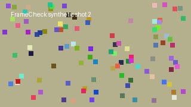
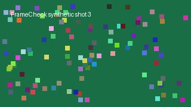

第一帧 / First frame · 00:00:00.000镜头 / Shot 001 00:00:00.000 → 00:00:02.000 · 2.00 s整体画面近似静止 / approximately static 拟合支持分数 / Fit support: 1.00 · 15/15 有效采样对 （不是正确率 / not accuracy）00:00:00.200 这是合成字幕示例，不是语音识别结果。 补充视觉解析 / Edit shot notes
第一帧 / First frame · 00:00:02.000镜头 / Shot 002 00:00:02.000 → 00:00:04.000 · 2.00 s疑似向右摇摄或平移（画面左移） / possible pan right 拟合支持分数 / Fit support: 1.00 · 15/15 有效采样对 （不是正确率 / not accuracy）00:00:02.200 第二个镜头：整体画面向左移动。 补充视觉解析 / Edit shot notes
第一帧 / First frame · 00:00:04.000镜头 / Shot 003 00:00:04.000 → 00:00:06.000 · 2.00 s画面放大，疑似推进或变焦 / apparent zoom in 拟合支持分数 / Fit support: 0.94 · 15/15 有效采样对 （不是正确率 / not accuracy）00:00:04.200 第三个镜头：画面逐渐放大。 补充视觉解析 / Edit shot notes